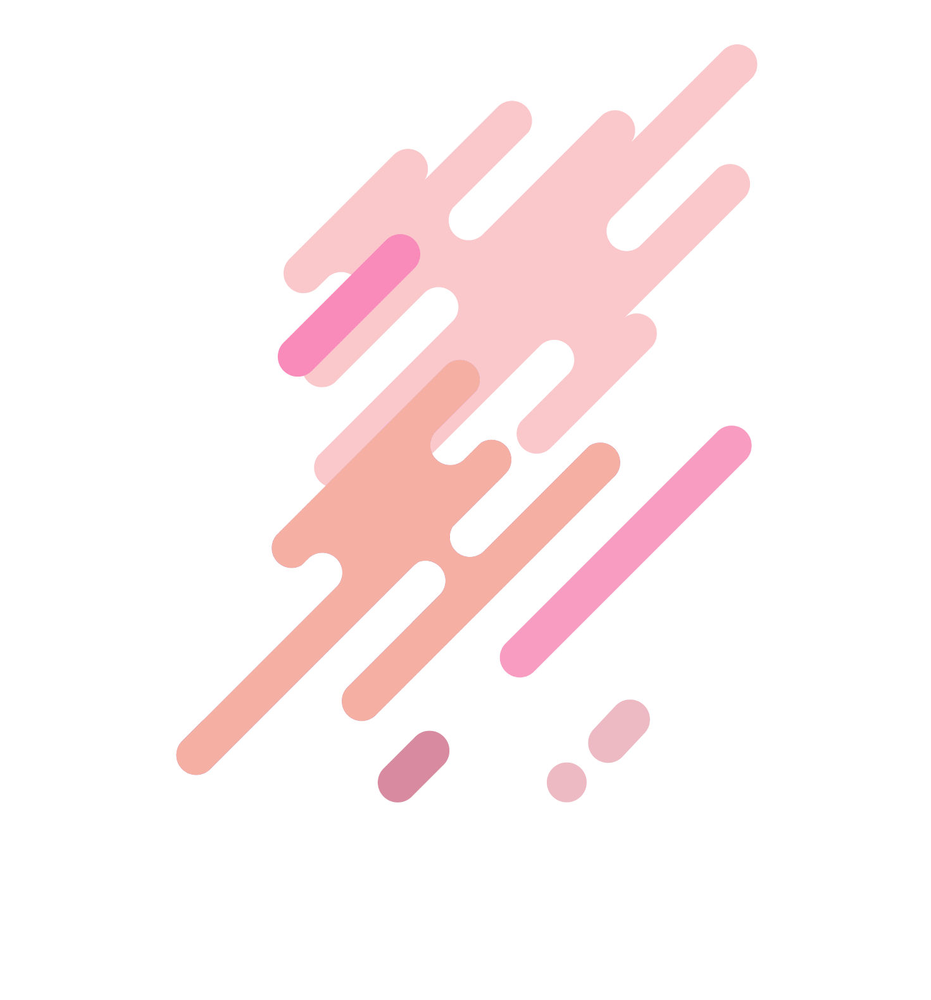

整形ツールの機能
GM用ページ
基本的にはGM用ページでシナリオを設定していきます。整形ツールで追加されるファイルはデフォルトではGM用となっています。
ページ設定
ページには「PL用」、「GM用」の設定をします。これらは別々のHTMLファイルとして出力されます。これにより、１ページ目にはPL用の情報が、２ページ目にはGM用の情報が表示されます。GM用ページへの遷移UIは自動で挿入されます。各ページの詳細な説明は以下のリンクから確認できます。
階層構造
ファイルはフォルダに格納することで階層構造を作成することができます。フォルダの中にフォルダを格納し、階層構造を深くすることも可能です。設定した階層構造はhtmlに自動で出力され、サイトの左サイドバーに同じ構造で反映されます。
階層構造のサンプルは左サイドバーから確認できます。
階層構造
サイトのシナリオ一覧に表示されるカードには、整形ツールからタグが設定できます。タグは複数設定することができます。設定したタグはhtmlに自動で出力され、サイトのシナリオ一覧に並ぶカードに自動で反映されます。
タグ機能を利用することで、希望のシナリオを絞り込みやすくなります。
見出し機能
見出しをH1～H4の４段階でつけることができます。見出しはアウトラインの抽出にも使用されます。また、テキストのジャンプリンクは見出しまたはファイルに対して設定できます。
H1
H1のサンプルです。
H2
H2のサンプルです。
H3
H3のサンプルです。
H4
H4のサンプルです。
リスト機能
整形ツールには箇条書き機能が搭載されています。
箇条書き
- サンプルテキストです サンプルテキストです
- サンプルテキストです サンプルテキストです
- サンプルテキストです サンプルテキストです
番号付きリスト
- サンプルテキストです サンプルテキストです
- サンプルテキストです サンプルテキストです
- サンプルテキストです サンプルテキストです
チェックリスト
背景色などを変更することができます。
ジャンプリンク機能
見出しやテキストにはジャンプリンクを設定することができます。リンク先はファイルまたは見出しです。ジャンプリンク機能を使用することで、シナリオの利便性を向上させることができます。
リンク先を別ファイルに設定した場合
「ページ設定」のページへジャンプします。
リンク先を別ファイルの見出しに設定した場合
「見出し機能」のページの「H3」にジャンプします。
リンク先を見出しに設定した場合
このページの「ジャンプリンク機能」の見出しにジャンプします。
装飾機能
テキストには可読性向上のための様々な装飾をすることができます。
文字の装飾
- 太字
取り消し線- 文字色
- マーカー
文字揃え
左揃えのサンプルテキストです左揃えのサンプルテキストです左揃えのサンプルテキストです左揃えのサンプルテキストです左揃えのサンプルテキストです左揃えのサンプルテキストです左揃えのサンプルテキストです左揃えのサンプルテキストです左揃えのサンプルテキストです
中央揃えのサンプルテキストです中央揃えのサンプルテキストです中央揃えのサンプルテキストです中央揃えのサンプルテキストです中央揃えのサンプルテキストです中央揃えのサンプルテキストです中央揃えのサンプルテキストです中央揃えのサンプルテキストです中央揃えのサンプルテキストです中央揃えのサンプルテキストです
右揃えのサンプルテキストです右揃えのサンプルテキストです
右揃えのサンプルテキストです右揃えのサンプルテキストです右揃えのサンプルテキストです右揃えのサンプルテキストです右揃えのサンプルテキストです右揃えのサンプルテキストです右揃えのサンプルテキストです右揃えのサンプルテキストです
水平線
下のような水平線を挿入できます。
テキストボックス機能
テキストボックスを挿入できます。テキストボックスには３種があり、用途に応じて使い分けができます。
全てのテキストボックスにはコピーボタンが搭載されており、ワンクリックでテキストをコピー可能です。ボックス内のタイトルをのぞいたテキストのみが必要な場合は「コピー」ボタンを押してください。タイトルを含めたコピーの場合は「Ｔ+コピー」ボタンを押してください。
テキストボックスのタイトル部分や背景の色は個別にカスタマイズすることができます。また、繰り返し使うパターンをテンプレートとして登録して呼び出して使用することができます。テンプレート機能については、「テンプレート機能」のページをご確認ください。
①タイトルありのテキストボックス
Ｔ+コピーボタンを押した場合
タイトルあり
タイトルありのテキストボックスです。
コピーボタンを押した場合
タイトルありのテキストボックスです。
②副タイトルありのテキストボックス
Ｔ+コピーボタンを押した場合
副タイトルあり
副タイトル部分はここです
副タイトルありのテキストボックスです。
コピーボタンを押した場合
副タイトルありのテキストボックスです。
③タイトルなしのテキストボックス
コピーボタンを押した場合
タイトルなしのテキストボックスです。
テンプレート機能
使いまわしたいテキストボックスなどのパーツを登録し、呼び出せるようにします。
テキストボックス
登録したテキストボックスを呼び出します。
使用例：補足情報、HOなど
パラメータ
ラベル名と値がセットになった行を表示できます。
使用例：ステータスなど
| 知能 | 10 |
| 勇気 | 10 |
| 敏捷 | 10 |
ココフォリア用ボックス
ココフォリアのコマを出力できる形式です。
使用例：キャラクターデータなど
| 名前 | 現在値 / 最大値 | ||
|---|---|---|---|
| HP | 100 | / | 100 |
| SP | 6 | / | 6 |
| MP | 6 | / | 8 |
| 知能 | 10 |
| 勇気 | 10 |
| 敏捷 | 10 |
選択肢ツリー機能
選択肢ツリーを挿入できます。選択肢ツリーには３種があり、用途に応じて使い分けができます。
テキストボックスのタイトル部分や背景の色は個別にカスタマイズすることができます。
①横並び
横並びの選択肢ツリーです。横に選択肢を増やすことができます。縦にはサブ選択肢を作成することができます。
②縦並び（中央線）
縦に選択肢を増やすことが可能です。サブ選択肢を直下に作成することもできます。
③縦並び（左線）
縦に選択肢を増やすことが可能です。
フリー接続図機能
フリー接続図は自由にノードを組み合わせて作図できる機能です。選択肢ツリー機能の補完やハンドアウトや情報の流れの整理に利用することを想定しています。出力したhtmlではノードや矢印を動かすことはできません。
この機能は不安定な要素を多く含んでおり、適宜調整して使用する必要があります。
画像挿入機能
画像を表示させる機能です。また、画像の切り抜きなども行えます。ただし、あまり高度な機能は実装していないため簡易的な利用が限界です。

サンプル１
サンプル２